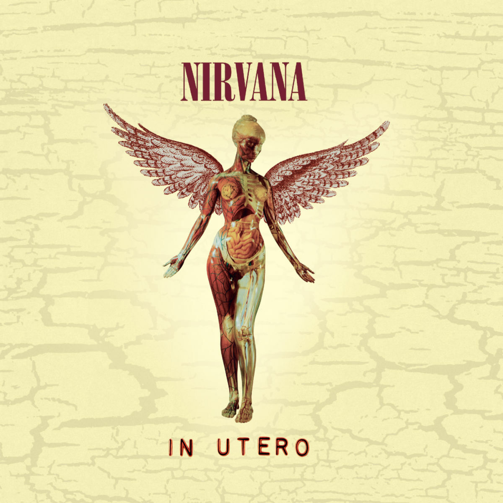
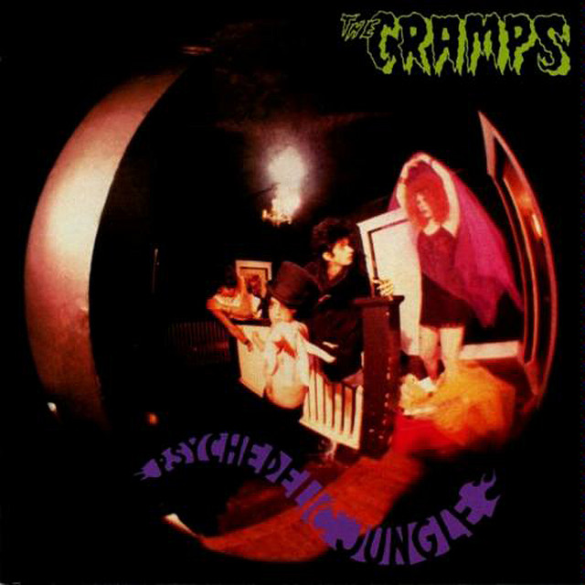
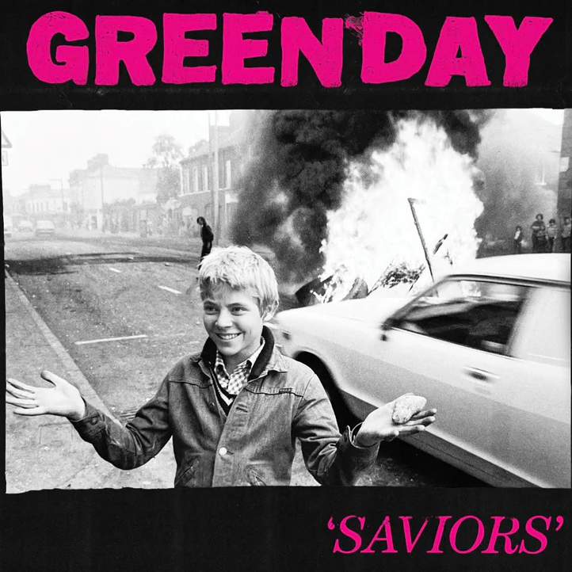
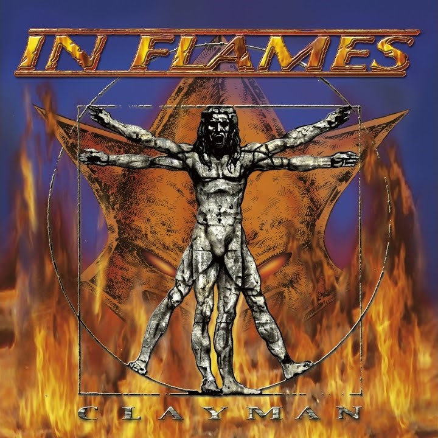

All I have to say is that Serve the Servants has a better riff than Smells Like Teen Spirit.
also stop wearing the H&M merch you look stupid
Honourable mentions:
Aneurysm
Drain You
Rape Me
[Nirvana] 7/10 in general

Goo Goo Muck blew up on tiktok as "the Wednesday song" and I'll be mad about that till my deathbed. The whole album is very Halloween-esque (best holiday)
[The Cramps] 6/10 in Psychedelic Jungle

Saviors is just 46 minutes of stupid dad rock and I will never get enough of it. Iconic band, iconic songs.
[Green Day] 9/10 in general

synthesizer go brrrrrrrrrrrrrrrrrrrrr this is what I use to concentrate in math
[In Flames] 10/10 in Clayman
too lazy 2 add more, if you disagree contact us at:
youropinioniswrong@gmail.com